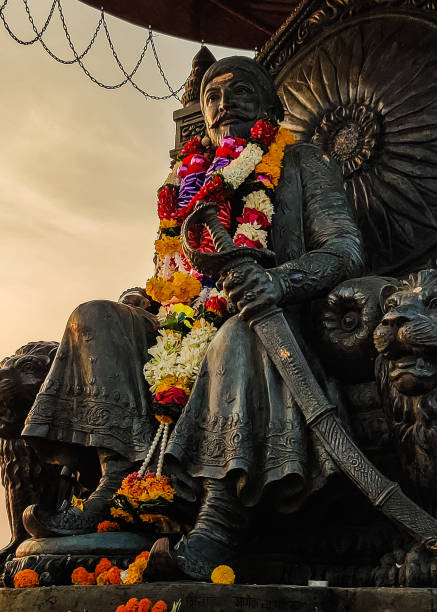

Chhatrapati Shivaji Maharaj
1630 - 1680
The Strongest Maratha King
Shivajiraje Shahajiraje Bhosale was an Indian ruler. He was born on 19th February 1630 on Fort Shivneri. Shivaji Maharaj carved out his own independent kingdom from the declining Adilshahi Sultanate of Bijapur that formed the genesis of Maratha Empire. In 1674, he was formally crowned the Chhatrapati of his realm at Raigad Fort. Shivaji Maharaj's military forces expanded the Maratha sphere of influence, capturing and building forts, and forming a Maratha navy. Shivaji Maharaj established a competent and progressive civil administration with well-structured administrative institutions.
About
- Full name: Shivaji Bhosale
- Born: 19 February 1630, Shivneri Fort, Kusur
- Died: 3 April 1680, Raigad Fort
- Spouse: Saibai Bhonsale (m. 1640–1659), Soyarabai (m. 1650–1680), Putalabai (m. 1653–1680), Sakvarbai (m. 1656–1680)
- Children: Chhatrapati Sambhaji Maharaj, Ranubai Jadhav, Rajaram I, Rajkunvarbai Shirke, Ambikabai Mahadik
- Parents: Jijabai, Shahaji
- Grandchildren: Shahu I, Bhavani Bai, Shivaji II, Sambhaji I of Kolhapur, Raja Karna